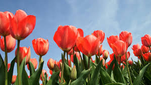
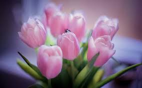

Tulips Tulips (Tulipa) are a genus of spring-blooming perennial herbaceous bulbiferous geophytes (having bulbs as storage organs). The flowers are usually large, showy and brightly colored, generally red, pink, yellow, or white (usually in warm colors)
Tulips
Tulips (Tulipa) are a genus of spring-blooming perennial herbaceous bulbiferous geophytes (having bulbs as storage organs). The flowers are usually large, showy and brightly colored, generally red, pink, yellow, or white (usually in warm colors)

All about Tulips Tulips are the most colorful of all spring flowers. They are also one of the easiest flowers you'll ever grow. Just plant the bulbs in fall for blossoms the following spring. There are hundreds of beautiful tulips to choose from, in enough colors, shapes, sizes and bloom times to inspire every gardeners creativity. Whether you plant them in groups of 10 or 1000, tulips always put on an impressive show.
All about Tulips
Tulips are the most colorful of all spring flowers. They are also one of the easiest flowers you'll ever grow. Just plant the bulbs in fall for blossoms the following spring. There are hundreds of beautiful tulips to choose from, in enough colors, shapes, sizes and bloom times to inspire every gardeners creativity. Whether you plant them in groups of 10 or 1000, tulips always put on an impressive show.

Fact About Tulip Tulips are one of the most popular beautiful flowers in the world. The tulip is a member of the Liliaceae (a lily family). Tulips belong to genus Tulipa are cultivated bulbous herb in the Liliaceae family. Along with this, it consists of almost about 100 species that are locally Eurasia from Austria, Italy eastward to Japan. There are about 150 species and 3,000 more different varieties. A centuries ago tulip originated in Persia and Turkey, at that time it played a significant role in the art and culture. The term tulip has been derived from a Persian word called Del band (turban).believed that the flower was called this because of its turban- shaped. Tulips flowers grow from bulbs. They usually bloom in spring. Carolus Clusius first identified Viral Infection tulip known as broken tulip. These plants are perennial which means they do not contain woody structure, also live for more than two years. Features of Tulips:- 1. Tulips are brightly colored, bell-shaped flower on a stem that grows from a bulb, also a flower itself. 2. The tulip produces two or more thick, colored leaves that are clustered at the base of the plant. 3. The usually bell-shaped flowers have three petals, sepals, and stems. There are six free stamens, and the three-lobed ovary is terminated by a sessile three-lobed stigma. 4. The fruit is a capsule with many seeds. Many garden tulips can be propagated only by their scaly bulbs.
Fact About Tulip
Tulips are one of the most popular beautiful flowers in the world. The tulip is a member of the Liliaceae (a lily family). Tulips belong to genus Tulipa are cultivated bulbous herb in the Liliaceae family. Along with this, it consists of almost about 100 species that are locally Eurasia from Austria, Italy eastward to Japan. There are about 150 species and 3,000 more different varieties. A centuries ago tulip originated in Persia and Turkey, at that time it played a significant role in the art and culture. The term tulip has been derived from a Persian word called Del band (turban).believed that the flower was called this because of its turban- shaped. Tulips flowers grow from bulbs. They usually bloom in spring. Carolus Clusius first identified Viral Infection tulip known as broken tulip. These plants are perennial which means they do not contain woody structure, also live for more than two years.
Some quick example text to build on the card title and make up the bulk of the card's content.